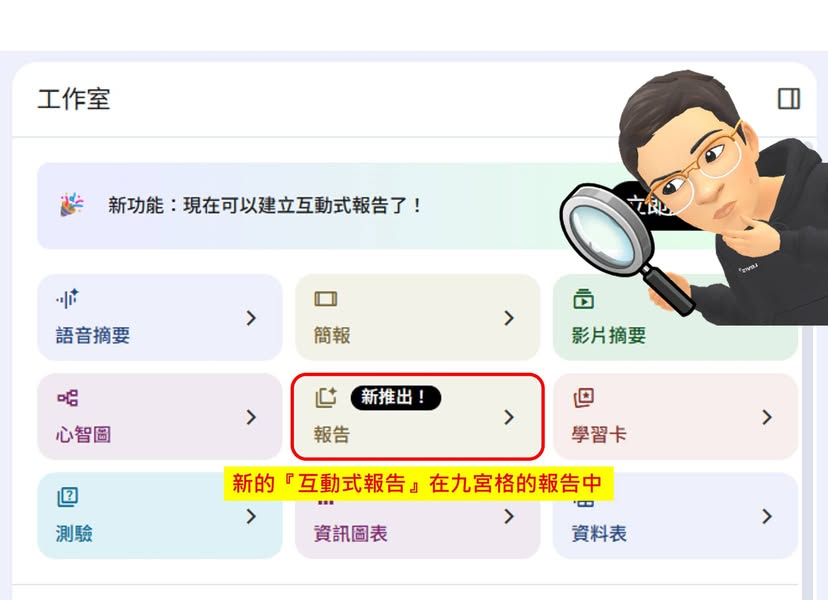

Facebook｜Gemini NotebookLM 新增互動式報告：把來源轉成文字、多媒體、圖表與測驗

一句話摘要
這則分享指出，Gemini NotebookLM 在原有「報告」功能中加入「互動式報告」模式，可把工作區來源整理成一份綜合型產出，並將文字說明、多媒體、數據圖表、建議提示與測驗串成同一個閱讀與學習介面。
Facebook 貼文重點
作者賴建宏以 NotebookLM 的「九宮格」工具為背景，指出使用者常會遇到一個問題：上傳完資料後，不確定哪些來源適合用哪一種工具處理。
貼文描述的新流程是：
- 上傳來源。
- 點擊「報告」。
- 選擇「互動式」模式。
- 視需要在下方補充自訂報告需求。
- 生成報告並查看 NotebookLM 對內容與後續操作的建議。
依貼文說明，產出的互動式報告可包含：
- 來源內容的綜合文字整理。
- 多媒體與數據圖表等呈現元素。
- 將工作區其他功能融入報告的建議。
- 對應的自訂提示詞建議，減少使用者自行設計指令的負擔。
- 報告末端的測驗內容，用於理解檢核或學習診斷。
實務上怎麼用
這個模式適合先把它當成「資料工作區的起手式」：不用一開始就決定要做簡報、心智圖、研究摘要或測驗，而是先讓系統依來源產生可瀏覽的整合報告，再從中挑選值得深入的方向。
可嘗試的輸入需求範例：
- 「以高中生能讀懂的方式整理，列出三個可延伸討論題。」
- 「聚焦數據證據與相互矛盾之處，標出需要再查證的主張。」
- 「做成 10 分鐘簡報前的研究 briefing，最後附五題自我測驗。」
- 「比較各來源的觀點、適用情境與限制，不要把推論寫成事實。」
使用注意事項
- 報告品質仍取決於來源品質；來源不足、過時或相互矛盾時，先補資料與查核，再把結果當作結論。
- 圖表、媒體與測驗可改善理解，但不等於內容已被外部驗證；重要數據與引用仍應回到原始來源。
- 不要上傳含有未授權個資、機密、受保護學生資料或第三方敏感文件。
- 產品功能通常會分批推出；「互動式報告」的名稱、位置、可選格式與帳號可用性，應以自己的 NotebookLM 介面為準。
對 AI 學習與教學的價值
互動式報告把「閱讀資料」往「根據資料組織學習活動」推進了一步。對教案準備、研究閱讀、專案 kickoff 或跨來源資料整理而言，可先用它快速取得結構、疑問與測驗，再由人補上查證、教學判斷與最終表述。
可用一句話記住：
上傳來源 → 互動式報告 → 檢視建議與證據 → 補問／查核 → 轉成自己的教學或工作產出
原始連結
- Facebook 原始分享：https://www.facebook.com/share/p/1HdrddzSXU/
- Facebook 解析後貼文：https://www.facebook.com/tinywhite.lai/posts/pfbid02jyaEyEu9DiBUFkj3oG8XssHgA7ygr3HhKYRLVALJVC22vW2TFsUpcCs5MgNiBNrel
擷取與查核範圍
Facebook 公開頁面可讀取作者、貼文文字、貼文時間與公開圖片；本文依這些可讀取內容整理，並將來源圖片下載保存，避免直接依賴可能失效的 Facebook CDN 熱連結。由於未登入狀態下無法完整檢視所有互動與產品帳號差異，本文不把貼文中的功能描述擴大為所有使用者都必然可用的官方保證。